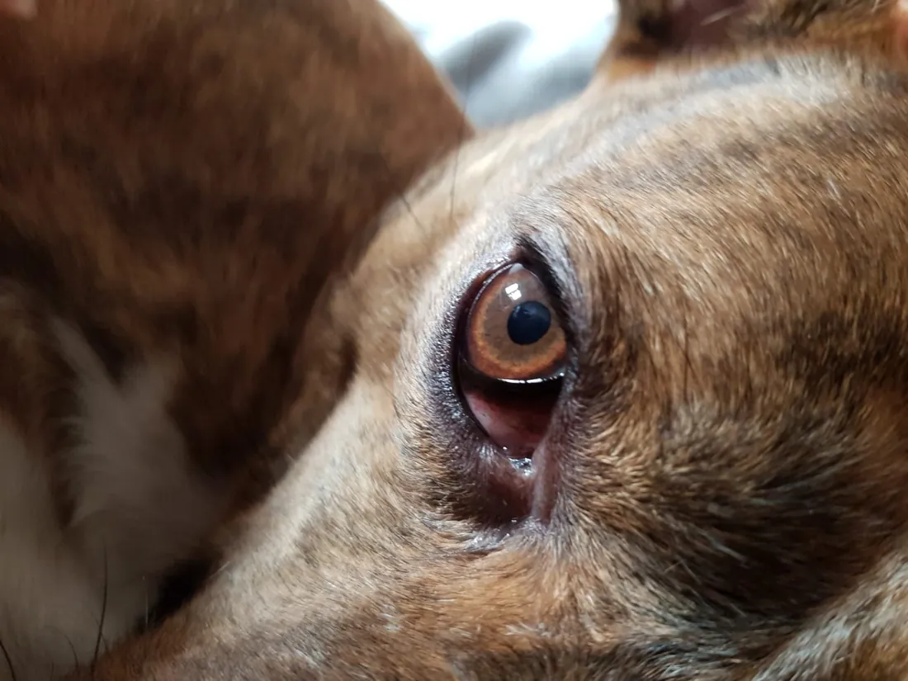

Sachkunde bedeutet mehr, als die richtigen Antworten wiederzuerkennen. Sie hilft dir zu verstehen,
was ein Hund im Alltag braucht, wie er lernt und welche Verantwortung du für ihn und seine Umgebung übernimmst.
Diese Einführung verbindet die Themen des Trainers zu einem Überblick über das gemeinsame Leben mit Hund.
Die folgenden Texte sind redaktionelles Lernmaterial. Bei einer Originalfrage bleibt der Lösungsschlüssel
ihrer Quelle für die Katalogwertung maßgeblich. Ältere oder widersprüchliche Aussagen werden dadurch nicht
automatisch zu einer aktuellen Empfehlung. Bekannte Auffälligkeiten kennzeichnet der Trainer nach dem Prüfen
mit „Quelle beachten“; ergänzende Erläuterungen helfen bei der Einordnung.
Ein Hund zieht ein
Ein Hund verändert den Alltag lange bevor die erste gemeinsame Runde selbstverständlich geworden ist. Deshalb beginnt gute Vorbereitung mit einem ehrlichen Blick auf das eigene Leben: Wer übernimmt die täglichen Spaziergänge, wie lässt sich Betreuung organisieren und welcher finanzielle Spielraum bleibt für Versorgung und Tierarztbesuche? Entscheidend ist, dass die Bedürfnisse des Hundes und die Möglichkeiten seiner Menschen zusammenpassen. Größe und Aussehen erzählen darüber nur wenig. Auch innerhalb einer Rasse unterscheiden sich Hunde in ihrem Temperament, ihren Erfahrungen und dem, was ihnen Sicherheit gibt.
Mit dem Einzug beginnt dann das gegenseitige Kennenlernen. Ein neuer Ort, unbekannte Geräusche und andere Abläufe müssen erst vertraut werden. Ein nachvollziehbarer Tagesrhythmus, ein geschützter Rückzugsort und behutsame gemeinsame Erfahrungen geben diesem Anfang Struktur. Bei jungen Hunden prägen frühe Erfahrungen die Entwicklung besonders stark; verständliche Regeln und passende Kontakte gehören von Anfang an dazu. Lernen bleibt aber ein Leben lang möglich. Auch ein erwachsener Hund kann sich mit Zeit und geduldiger Begleitung in einen neuen Alltag einfinden.
Verhalten verstehen und Lernen ermöglichen
Im Zusammenleben lernt ein Hund fortwährend, welches Verhalten sich für ihn lohnt. Wird erwünschtes Verhalten zuverlässig belohnt, kann er leichter erkennen, was sein Mensch von ihm erwartet. Ein Verbot allein erklärt dagegen noch keine Alternative. Zieht der Hund beispielsweise an der Leine, ist es hilfreicher, ruhiges Gehen in passenden Situationen aufzubauen, als ihm eine vermeintliche Absicht zu unterstellen. Aufregung, Ablenkung, Unsicherheit oder fehlende Übung können hinter demselben sichtbaren Verhalten stehen. Gute Erziehung beginnt deshalb damit, die jeweilige Situation zu verstehen und die Anforderungen daran anzupassen.
Das gilt besonders dann, wenn ein Hund Angst hat. Gewöhnung entsteht nicht dadurch, dass er eine überfordernde Situation einfach aushalten muss. Bewältigbare Schritte lassen Raum für positive Erfahrungen; Abstand und Pausen können dazugehören. Bedrohung und Schreckreize können Unsicherheit verstärken und machen die Ursache eines Problems nicht verständlicher. Wenn Angst oder aggressives Verhalten das Zusammenleben belasten, gehört die fachliche Begleitung durch eine Tierarztpraxis und qualifizierte Verhaltensberatung zur verantwortlichen Vorbereitung.
Begegnungen aufmerksam begleiten
Ob ein Hund entspannt, unsicher oder angespannt ist, lässt sich nicht an einem einzelnen Körperteil ablesen. Ohren, Rute, Gesicht, Muskelspannung und Bewegung gehören zusammen. Ebenso wichtig ist der Zusammenhang: Wem begegnet der Hund, wie viel Abstand hat er und kann er sich der Situation entziehen? Eine hoch getragene Rute ist für sich genommen keine Einladung zum Kontakt. Auch Blickkontakt muss im Gesamtbild beurteilt werden. Aufmerksames Beobachten hilft, Veränderungen früh wahrzunehmen und eine Begegnung rechtzeitig ruhiger zu gestalten.
Im Kontakt mit Kindern liegt diese Verantwortung bei den Erwachsenen. Ein vertrauter Hund ist nicht automatisch mit jeder Berührung einverstanden, und auch ein kleiner Hund kann verletzen. Umarmen, Küssen oder Festhalten kann ihn bedrängen, obwohl die Geste freundlich gemeint ist. Gut begleitete Begegnungen lassen beiden Seiten Raum und ermöglichen dem Hund, Abstand zu nehmen. Besonders kleine Kinder dürfen deshalb nicht mit einem Hund allein bleiben. Sicherheit entsteht durch Aufsicht und Rücksicht, nicht durch die Annahme, dass bisher immer alles gut gegangen ist.

Sicher unterwegs
Ein gemeinsamer Ausflug beginnt mit der Frage, was am jeweiligen Ort möglich und erlaubt ist. Freilauf, Leinenführung und ein gegebenenfalls vorgeschriebener Maulkorb hängen nicht nur vom Verhalten des Hundes ab. Auch seine rechtliche Einordnung, örtliche Vorschriften und die Grenzen einer behördlichen Befreiung spielen eine Rolle. Was auf einer vertrauten Strecke zulässig ist, muss deshalb nicht an einem anderen Ziel gelten. Die Übersicht zu Haltung und Recht und die Reisehinweise helfen bei der Vorbereitung; verbindliche Fragen klärst du mit der zuständigen Stelle.
Zur Sicherheit gehört ebenso die praktische Ausrüstung. Ein geeigneter Maulkorb muss sicher sitzen und ausreichendes Hecheln ermöglichen; eine enge Maulschlaufe ist kein Ersatz für den Alltag. Für die Fahrt zum Ausflugsziel braucht der Hund eine passende Sicherung im Fahrzeug. Dass er normalerweise ruhig liegen bleibt, schützt ihn bei einer Vollbremsung nicht vor den Folgen. Rechtliche Vorbereitung und durchdachte Ausstattung ergänzen sich so zu einem Alltag, in dem du dich auf deinen Hund konzentrieren kannst.
Gesundheit und Verantwortung
Wohlbefinden entsteht aus vielen aufeinander abgestimmten Bedürfnissen. Ein Hund braucht Bewegung und Beschäftigung, zugleich aber auch Ruhe, verlässliche Betreuung und gesundheitliche Versorgung. Welche Form und welcher Umfang passen, hängt unter anderem von Alter, Gesundheitszustand und den Möglichkeiten des einzelnen Hundes ab. Die Wohnungsgröße oder eine pauschale Zeitangabe allein sagen deshalb wenig darüber aus, wie gut seine Haltung gelingt. Auch Sozialkontakte müssen zum Hund passen; nicht jede Begegnung mit Artgenossen ist für jedes Tier eine gute Erfahrung.
Zur gemeinsamen Verantwortung gehört, Veränderungen wahrzunehmen und bei gesundheitlichen Fragen die Tierarztpraxis einzubeziehen. Vorsorge und Impfungen werden dort ebenso individuell besprochen wie besondere Anforderungen vor einer Reise. Medizinische Eingriffe sind keine allgemeine Antwort auf Schwierigkeiten im Zusammenleben. Wer Versorgung, Erholung und Lernen als zusammenhängende Aufgaben versteht, schafft eine tragfähigere Grundlage als mit einzelnen Regeln für jede denkbare Situation. Genau dabei soll das Wissen aus dem Fragenkatalog helfen: Entscheidungen im Alltag besser einordnen zu können.